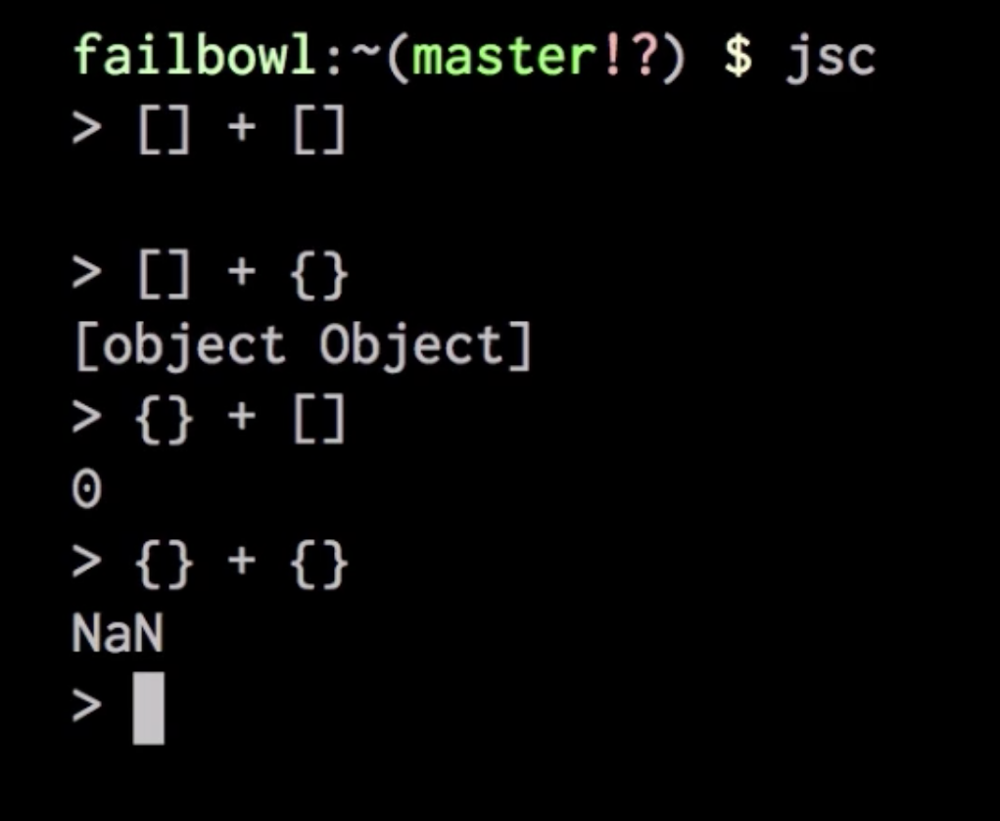
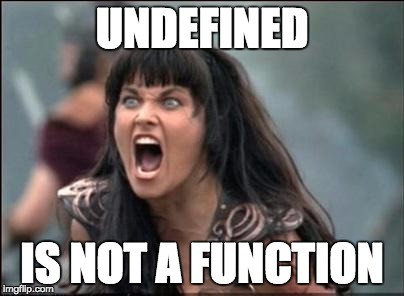
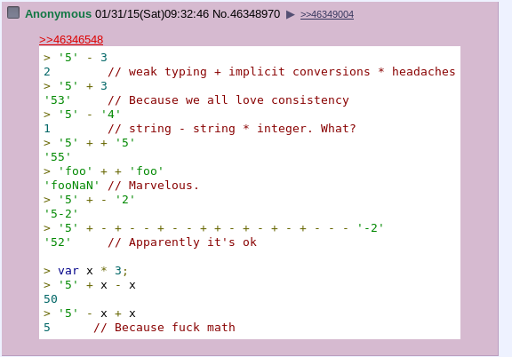
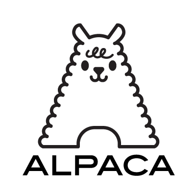

.left-column[ ### Dynamic type system ] .right-column[ .center[ <img src="img/js-chan.jpg" width="35%"> ] ] --- .left-column[ ### Dynamic type system ] .right-column[ - Popular - Easy to start - Easy to write generic code - Easy to modify code - Smaller amount of boilerplate code - Compiler is not needed (in most cases) - Cross-platform (in most cases) ] --- .left-column[ ### Dynamic type system ] .right-column[ - Popular - Easy to start - Easy to write generic code - Easy to modify code - Smaller amount of boilerplate code - Compiler is not needed (in most cases) - Cross-platform (in most cases) .center[ ] ] --- .left-column[ ### Dynamic type system ### Too dynamic ] .right-column[ .center[    ] ] --- .left-column[ ### Dynamic type system ### Too dynamic ### Static tools/compilers ] .right-column[ - JS - Facebook: [Flow](https://flow.org/), [REason](https://reasonml.github.io/) - JS - Microsoft: [TypeScript](https://www.typescriptlang.org/) - JS - Google: [Dart](https://www.dartlang.org/) - PHP - Zend Technologies: [PHP7](http://php.net/manual/en/migration70.new-features.php) - Erlang - Ericsson: ??? ] --- .left-column[ ### Dynamic type system ### Too dynamic ### Static tools/compilers ] .right-column[ - JS - Facebook: [Flow](https://flow.org/), [REason](https://reasonml.github.io/) - JS - Microsoft: [TypeScript](https://www.typescriptlang.org/) - JS - Google: [Dart](https://www.dartlang.org/) - PHP - Zend Technologies: [PHP7](http://php.net/manual/en/migration70.new-features.php) - Erlang - Ericsson: [Dialyzer](http://erlang.org/doc/man/dialyzer.html) - Elixir - Heathmont: ??? .center[ ] ] --- .left-column[ ### Dynamic type system ### Too dynamic ### Static tools/compilers ### Dialyzer ] .right-column[ ```elixir @type currency :: :BTC | :USD | :EUR @type t :: %Transaction{ amount: non_neg_integer(), currency: currency(), reference: Transaction.t } ``` - built-in + custom types - algebraic types - recursive types ] --- .left-column[ ### Dynamic type system ### Too dynamic ### Static tools/compilers ### Dialyzer ] .right-column[ ```elixir @type currency :: :BTC | :USD | :EUR @type t :: %Transaction{ amount: non_neg_integer(), currency: currency(), reference: Transaction.t } ``` - built-in + custom types - algebraic types - recursive types .center[ ] ] --- .left-column[ ### Dynamic type system ### Too dynamic ### Static tools/compilers ### Dialyzer ] .right-column[ .middle[ ```elixir @spec factorial(non_neg_integer()) :: pos_integer() def factorial(0), do: 1 def factorial(n), do: n * factorial(n - 1) ``` ] ] --- .left-column[ ### Dynamic type system ### Too dynamic ### Static tools/compilers ### Dialyzer ] .right-column[ .middle[ ```elixir @spec factorial(non_neg_integer()) :: pos_integer() def factorial(0), do: :foo def factorial(n), do: :bar ``` .center[ then Dialyzer says ] ``` lib/hello.ex:16: Invalid type specification for function 'Elixir.Hello':factorial/1. The success typing is (_) -> 'bar' | 'foo' ``` ] ] --- .left-column[ ### Dynamic type system ### Too dynamic ### Static tools/compilers ### Dialyzer ] .right-column[ .middle[ ```elixir @spec factorial(non_neg_integer()) :: pos_integer() def factorial(0), do: :foo def factorial(n), do: :bar ``` .center[ then Dialyzer says ] ``` lib/hello.ex:16: Invalid type specification for function 'Elixir.Hello':factorial/1. The success typing is (_) -> 'bar' | 'foo' ``` ] .center[ ] ] --- .left-column[ ### Dynamic type system ### Too dynamic ### Static tools/compilers ### Dialyzer ] .right-column[ .middle[ ```elixir @spec factorial(non_neg_integer()) :: pos_integer() def factorial(0), do: 1 def factorial(n), do: :bar ``` .center[ then Dialyzer says ] ``` done (passed successfully) ``` ] .center[ ] ] --- .left-column[ ### Dynamic type system ### Too dynamic ### Static tools/compilers ### Dialyzer ] .right-column[ .middle[ .center[ ## Success Typings ] Dialyzer based on [whitepaper](http://www.it.uu.se/research/group/hipe/papers/succ_types.pdf) from [Uppsala University](https://www.it.uu.se/research/group/hipe/), Sweden. Idea is optimistic type checking. If it can find at least <strong>ONE</strong> route through the code which type checks, then it is happy. ] .center[ <img src="img/this-is-fine-meme.gif" width="60%"> ] ] --- .left-column[ ### Dynamic type system ### Too dynamic ### Static tools/compilers ### Dialyzer ### Solutions ] .right-column[ - [Alpaca](https://github.com/alpaca-lang) language by [Jeremy Pierre](https://www.linkedin.com/in/j14159/) - [Elchemy](https://wende.github.io/elchemy/) language by [Krzysztof Wende](https://www.linkedin.com/in/krzysztof-wende-22b98b7b/) - Create [your own](https://github.com/llaisdy/beam_languages#implementing-languages-on-the-beam-1) language on the BEAM VM - Lobby optional static types in Elixir 2.0 compiler (money, media, contacts etc) - Create static analysis tool for Elixir, based on Elixir AST .center[  <img src="img/elm-logo.png" width="45%"> ] ] --- .left-column[ ### Dynamic type system ### Too dynamic ### Static tools/compilers ### Dialyzer ### Solutions ] .right-column[ ```elixir @spec factorial(non_neg_integer()) :: pos_integer() def factorial(0), do: 1 def factorial(n), do: :bar ``` .center[ actually is ] ```elixir {:__block__, [], [ {:@, [line: 1], [ {:spec, [line: 1], [ {:::, [line: 1], [ {:factorial, [line: 1], [{:non_neg_integer, [line: 1], []}]}, {:pos_integer, [line: 1], []} ]} ]} ]}, {:def, [line: 3], [{:factorial, [line: 3], [0]}, [do: 1]]}, {:def, [line: 4], [{:factorial, [line: 4], [{:n, [line: 4], nil}]}, [do: :bar]]} ]} ``` ] --- .left-column[ ### Dynamic type system ### Too dynamic ### Static tools/compilers ### Dialyzer ### Solutions ] .right-column[ ```elixir @type t :: %Transaction{ amount: non_neg_integer(), currency: currency(), reference: Transaction.t } ``` .center[ actually is ] ```elixir {:@, [line: 1], [ {:type, [line: 1], [ {:::, [line: 1], [ {:t, [line: 1], nil}, {:%, [line: 1], [ {:__aliases__, [line: 1], [:Transaction]}, {:%{}, [line: 1], [ amount: {:non_neg_integer, [line: 2], []}, currency: {:currency, [line: 3], []}, reference: {{:., [line: 4], [{:__aliases__, [line: 4], [:Transaction]}, :t]}, [line: 4], []} ]} ]} ]} ]} ]} ``` ] --- .left-column[ ### Dynamic type system ### Too dynamic ### Static tools/compilers ### Dialyzer ### Solutions ] .right-column[ .center[ ## Conclusion ] - Elixir @type nonations are awesome ❤️❤️❤️ - Dialyzer is only one static analysis tool for BEAM and it sucks - But Dialyzer is much more better than nothing - <strong>Elixir compiler needs native support of typecheks based on @type and @spec notations</strong> - Tool "like Dialyzer but better" is also acceptable option ] --- class: center, middle # Thanks [back to index](index.html)